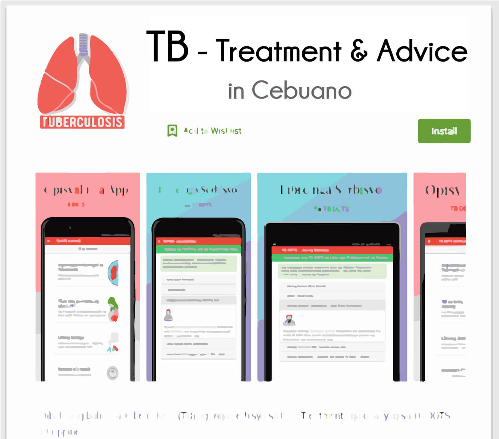

The Cebuano Mobile App For Tuberculosis Awareness

Tuberculosis (TB) is a dangerous respiratory disease which is very common in the Philippines. The Philippines has the 3rd highest TB prevalence rate in the world. Close to 1 million Filipinos have active TB and about 70 lives are lost per day due to this disease. Yet, TB is one of those diseases that we have good treatment options for. It’s curable. But why then is it still here?
Stopping TB is difficult, partly because of who it affects: It tends to affect the poor and disenfranchised most. Tom Frieden (Infectious Diseases specialist and Public Health Expert)
Most developed nations worry little about TB, as this disease is known commonly as a ‘disease of the poor’. Poverty is an important risk factor for TB, and with poverty — lack of awareness about TB care becomes inevitable.
It was only in the early 90s that, together with the WHO, the National Tuberculosis Program (NTP) of the Philippines set up the first few TB-DOTS facilities. ‘DOTS’ or Direct Observed Therapy Short-course is a decentralized local health unit specializing in tuberculosis care, monitoring, and reporting. The success of these small TB-DOTS centers had a tremendous impact on TB care. By 2000, the Philippines reported 100% DOTS coverage.
Yet I frequently came across the issue of a lack of awareness about TB-DOTS facilities in my region. This was especially concerning because services of TB-DOTS facilities are FREE. Regardless of your gender, race, or nationality, these centers offer free check-up (Gene Xpert) / Xray, free consultation with a specialist physician, free TB drugs, and monitoring.
The app is available for free download on Google Play Store:
https://play.google.com/store/apps/details?id=com.tbdots.openwolf
The ‘TB Treatment & Advice’ app was created to improve awareness and the reach of TB-DOTS facilities in my region. The app was made in the local language (Cebuano / Bisaya) and explains in simple terms the process and all free facilities offered by one among the two major TB-DOTS centers in Cebu island - Mandaue City Health TB DOTS Center.